真实 NBV 实验展示00 Experiment Dashboard
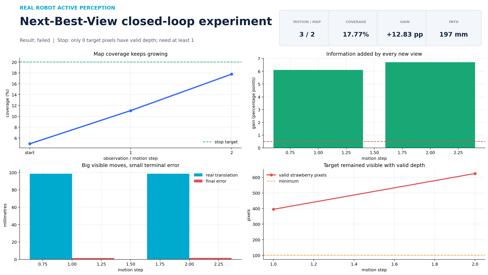
01 Coverage Curve
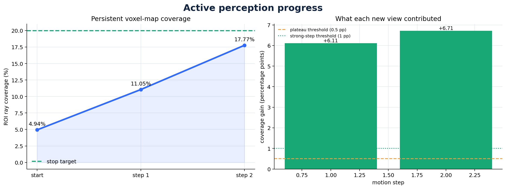
02 Camera Trajectory 3D
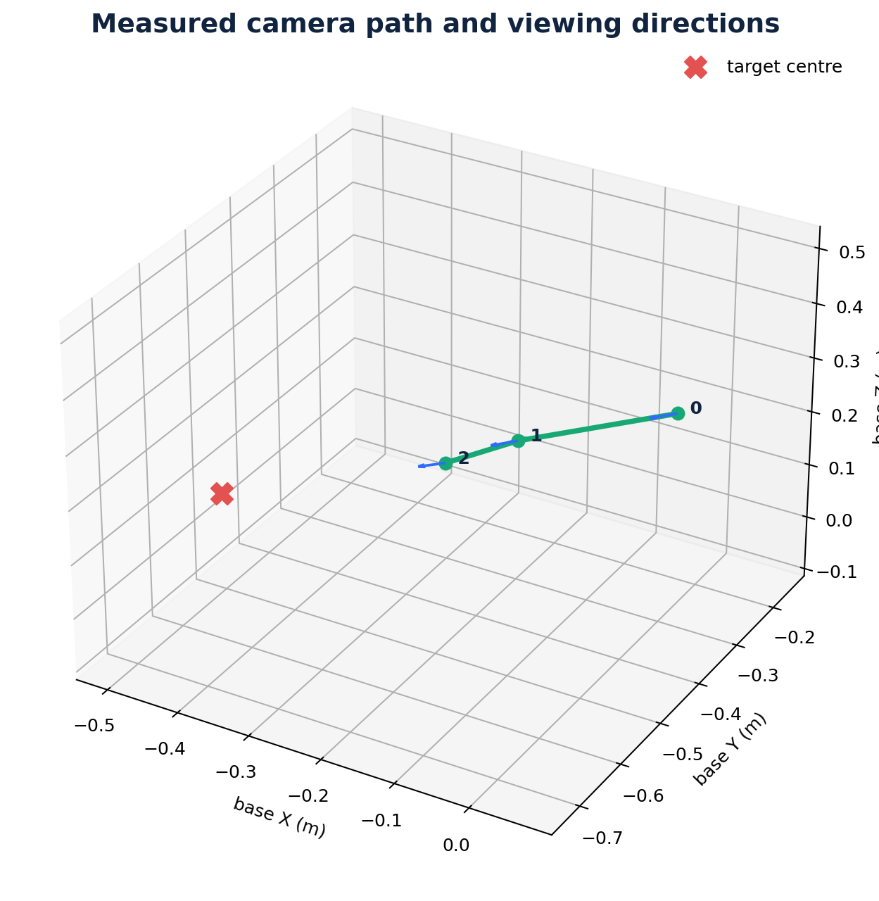
03 Candidate Funnel
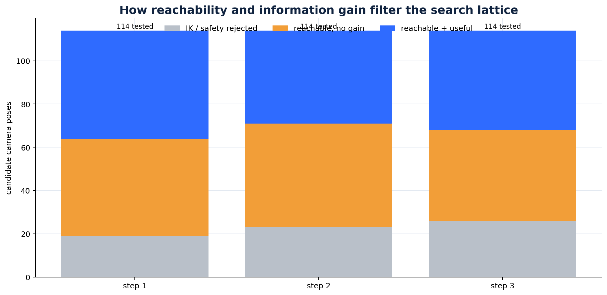
04 Motion Profile
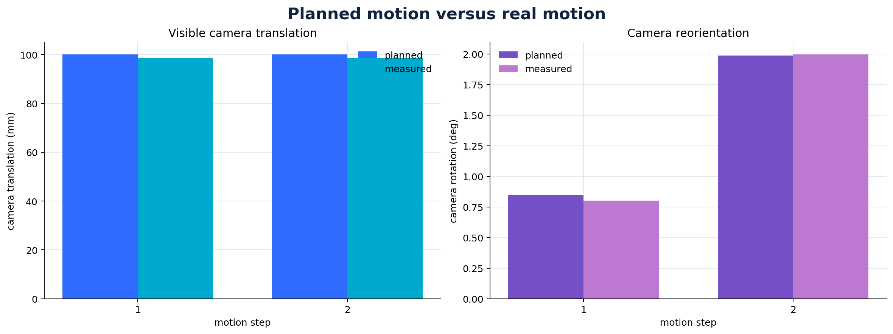
05 Accuracy Safety
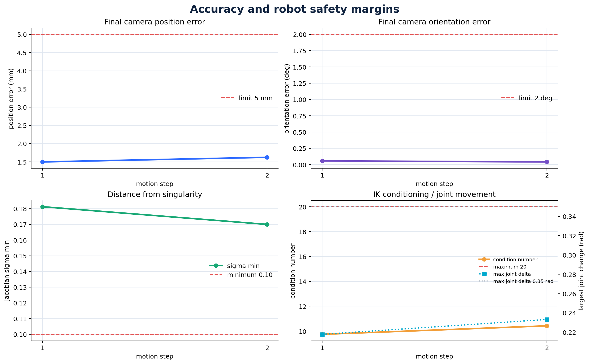
06 Target Map Quality
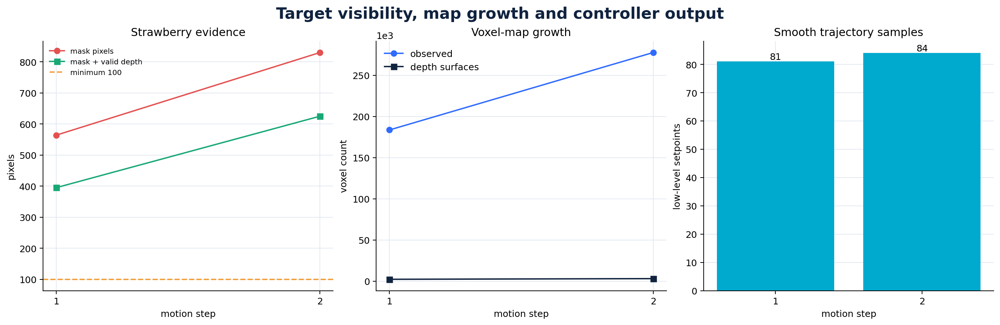
07 Session Timeline
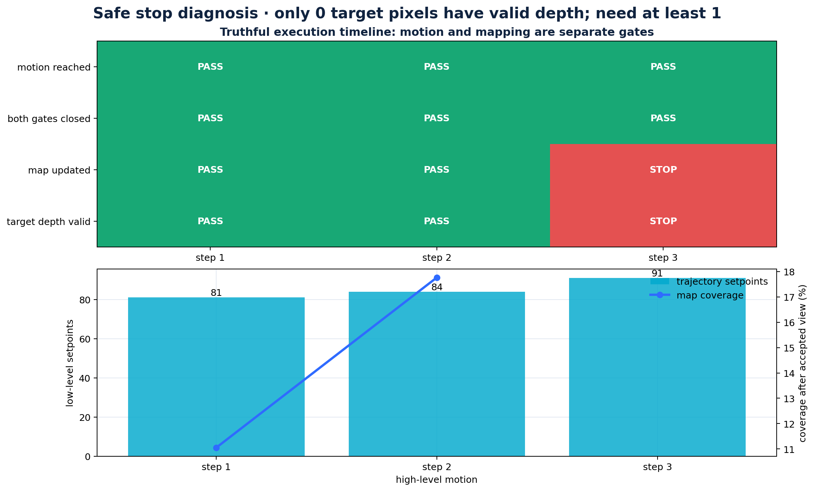
Candidate Step 001
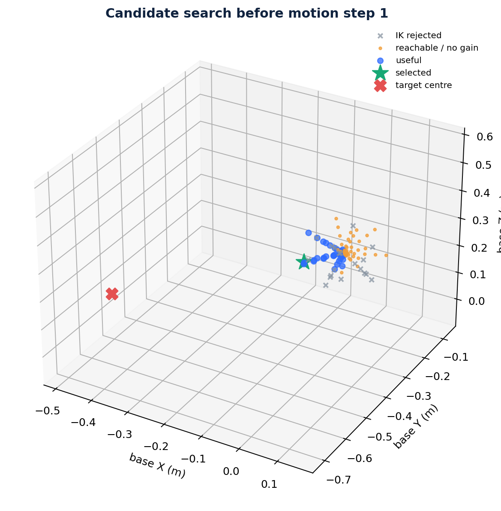
Candidate Step 002
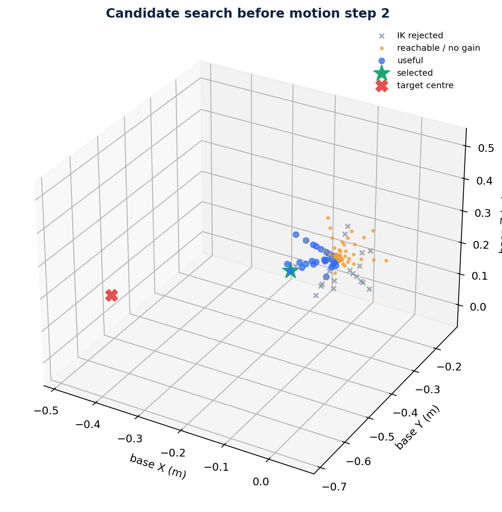
Candidate Step 003
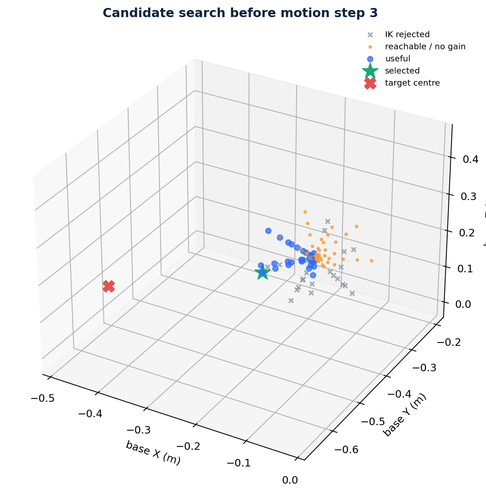
Nbv Map Final
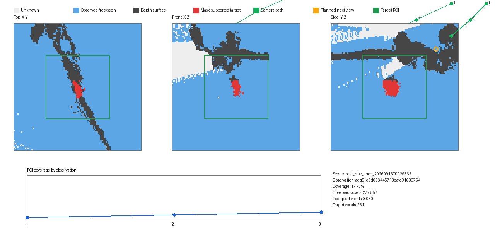
Observation Contact Sheet
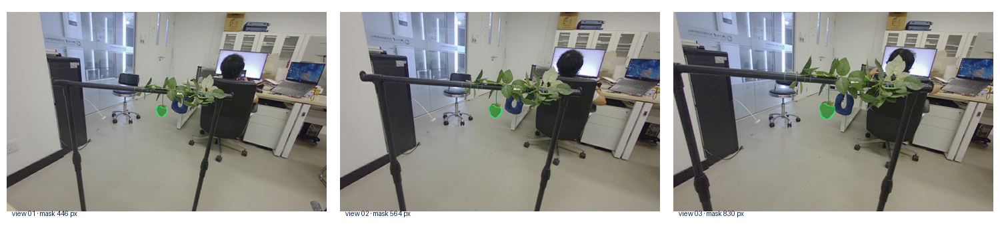
Voxel Cloud Final 3D
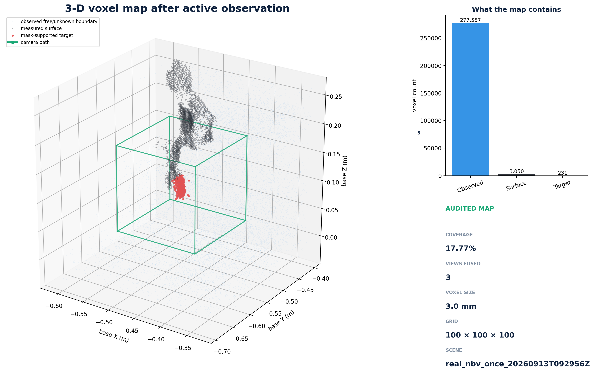